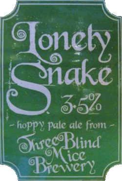
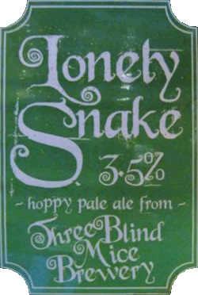

Anderson Valley Hop Ottin IPA, Three Blind Mice Lonely Snake, Weird Beard Mariana Trench

 

This week an old favourite (Weird Beard Mariana Trench),
an exclusive new brewery to Norfolk (California's Anderson Valley Hop Ottin IPA)
and a preview of our Meet The Brewer next week (Three Blind Mice Lonely Snake).
Hat trick mate.